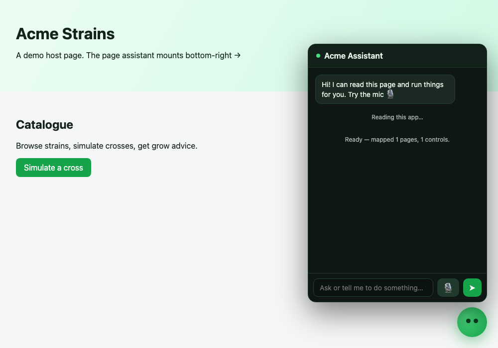

Drop it into any website. It reads the page, runs your real features by voice or text,
and never makes up results. It even publishes an llm.txt so other
AI agents can drive your app.
Open source · MIT · built from the strive assistant, Daisy voice, and AI-OS memory.
Most "AI on your site" widgets let the model claim it did something. This one can't.
You expose real functions as "capabilities". No capability for a request? It says so — it never pretends.
Each capability returns the real result and renders the user-facing text. The model narrates around facts, it doesn't invent them.
If the model writes a number no function actually returned, it's rejected and replaced with the real output. Proven in tests.
In this demo a user asks, by voice, to simulate a high-yield cross, get the predicted plant height, and re-run with a shorter parent when it's too tall — and the live assistant does every step on the real app. Two voices: the user (male) and the assistant (female).
Live on greenpert.6x7.gr — the assistant scanned the real app (6 pages, 21 controls) and ran the real breeding simulator.
A tiny Node service holds your API keys and proxies the model + voice. Keys never reach the browser.
npm i @page-assistant/server
# set ANTHROPIC_API_KEY (or OpenAI / OpenRouter)
npx page-assistant-server # :8787One script tag, or an import in React/Next/Vue. A floating mascot appears bottom-right.
<script src="https://unpkg.com/@page-assistant/widget/dist/page-assistant.global.js"></script>Map the things your app can do to functions. That's the whole integration.
PageAssistant.init({
serverUrl: "http://localhost:8787",
appName: "My App",
voice: true,
capabilities: [{
name: "simulate_cross",
description: "Simulate a cross and predict yield + height.",
parameters: { type:"object", properties:{
a:{type:"string"}, b:{type:"string"} }, required:["a","b"] },
run: ({a,b}) => myApp.simulate(a,b), // your REAL function
render: (r,a) => `Yield ${r.yield}/100, height ${r.low}–${r.high} cm.`
}]
});Free out of the box using the browser's built-in voices, or switch on ElevenLabs + Whisper for studio-quality speech. Talk over it and it stops instantly — a real conversation, not a press-to-talk toy.

The assistant publishes a machine-readable contract. Any agent can discover what your app does and drive it — getting the same grounded, validated results a human would.
A plain-language description of your app and every action its assistant can take.
The same, machine-first: a JSON manifest of capabilities and their parameters.
The living assistant. Another agent sends a request in plain English; your app does it.